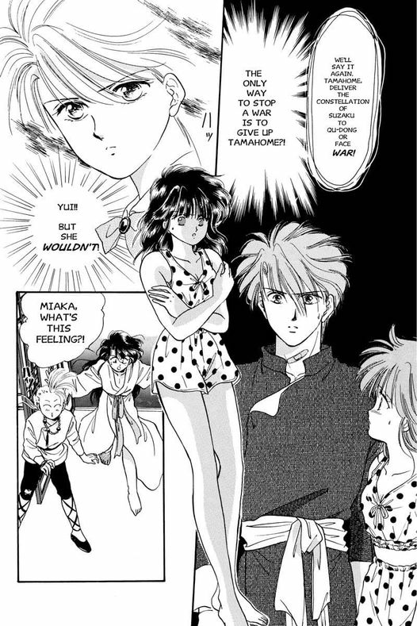

Manga
Written and illustrated by Yuu Watase, Fushigi Yûgi originally appeared in serial form in the semimonthly manga magazine Shōjo Comic. It premiered in the January 1, 1992 (No. 1) issue, released in December 1991, and ran for over five years, ending in the June 5, 1996 (No. 12) issue, released in May 1996. The series was simultaneously published in eighteen collected volumes by Shogakukan, with new volumes being released on a quarterly schedule.
In 1992, Viz Media licensed the manga for an English-language release in North America. The series was originally released in a flipped trade paperback format, starting in August 1998. Several characters have both Japanese pronunciations and Chinese pronunciations. In 1998, Watase visited the United States and met with Viz staff members at their San Francisco headquarters. Viz kept the original Chinese names of characters at her request. Bill Flanagan, the editor of the English version, asked Watase if he should use the Chinese names for popular characters such as Tai Yi-Jun (Taitsukun), and she also asked for the Chinese names to be used there. The characters with names remaining in Japanese in the English version are the characters such as Tamahome who have Japanese pronunciations of ancient constellations; there was never any intention of them having Chinese names.
This caused some confusion for fans as the anime version uses the Japanese names. For example, in the manga, Hotohori's country is named "Hong-Nan" rather than the "Konan" found in the anime series. After eight volumes, Viz stopped publication of Fushigi Yûgi, reviving it in June 2003 when it released the first two volumes in unflipped standard manga size volumes. The remaining volumes were released on a quarterly schedule, including the remaining ten volumes. The final volume of the series was released in April 2006. The dates and ISBN numbers given for the first eight volumes in the table on the link above are for the second edition releases.
Viz also serialized Fushigi Yûgi in their manga anthology magazine, Animerica Extra, starting with the October 1998 debut issue and running until the December 2004 issue, the magazine's final issue. In 2009 and 2010, Viz re-released the series as part of their "VIZBIG" line, combining three individual volumes of the original release into each single, larger volume.